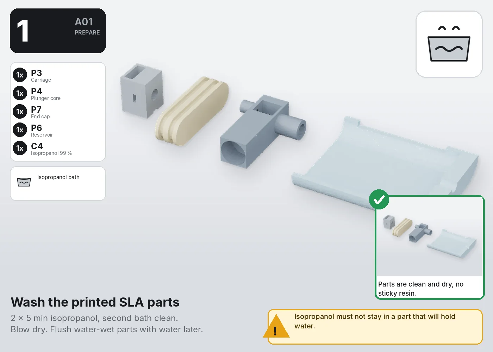

BENCH TEST ONLY. Not a medical device. Never worn on, attached to or used on a person or an animal. Water only: never insulin or any other drug.
Follow the steps in order. One action per step. Compare your work with the green check image before you go on.
